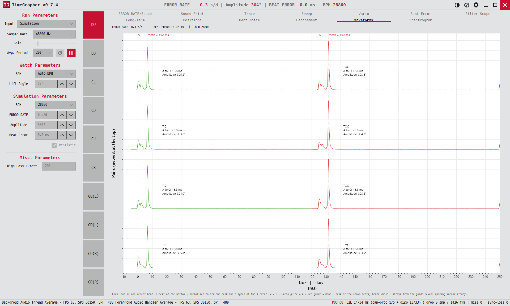

12. Waveforms
똑(tic)과 딱(toc) 비트를 쌍으로 나란히 겹쳐, 좌우 타이밍이 대칭이고 안정적인지 비교합니다.
Overlays tic and toc beats as pairs to compare whether their timing is symmetric and stable.

용도 · Purpose
똑과 딱이 같은 모양·같은 간격으로 오는지(대칭성)와, 최근 비트들에 걸쳐 타이밍이 일정한지 봅니다. 비트 오차를 시각적으로 확인하는 탭입니다.
Shows whether tic and toc arrive with the same shape and spacing (symmetry) and whether timing holds across recent beats — a visual take on beat error.
무엇이 보이나 · What's shown
- 레인 스택 — 최대 6개 똑/딱 쌍을 세로로 쌓습니다(최신이 맨 위). 한 레인 = 한 쌍.Lane stack — up to 6 tic/toc pairs stacked vertically (newest on top). One lane = one pair.
- 각 레인에서 왼쪽 절반은 tic(초록), 오른쪽 절반은 toc(빨강). 둘 다 A 기준으로 정렬되고 진폭은 1로 정규화.In each lane the left half is the tic (green), the right half is the toc (red), both A-aligned and peak-normalized.
- X축:
tic ← | → toc (ms). 가이드선: 양쪽 A(초록 점선)·평균 C(빨강 점선).X axis:tic ← | → toc (ms). Guides: A (green dashed) and mean-C (red dashed) on each side. - 레인 라벨:
A to C: X ms,Amplitude: Y°. 위 헤더:ERROR RATE … | BEAT ERROR … | BPH ….Lane labels:A to C: X ms,Amplitude: Y°. Header:ERROR RATE … | BEAT ERROR … | BPH ….
읽는 법 · How to read
- tic·toc 트레이스가 거의 겹치면 좌우 대칭이 좋은 것입니다.When the tic and toc traces nearly overlap, left/right symmetry is good.
- 양쪽의 초록 A 가이드와 빨강 C 가이드의 가로 간격이 곧 비트 오차의 시각적 크기 — 작을수록 좋습니다.The horizontal gap between the green A guide and red C guide on each side is the visual size of the beat error — smaller is better.
- 여러 레인의 모양이 일정하면 최근 비트들의 타이밍 반복성이 높습니다.Consistent shapes down the lanes mean high timing repeatability over recent beats.